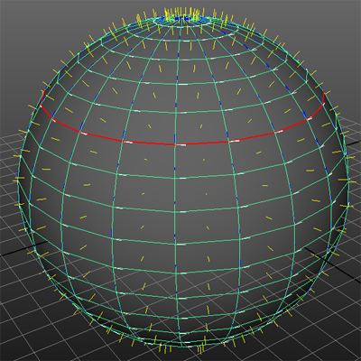

提示： 若要硬化边，请切换到边模式，然后双击某个边。然后选择“网格显示 > 硬化边”(Mesh Display > Harden Edge)。
若要查看硬边，请选择“显示 > 多边形 > 硬边”(Display > Polygons > Hard Edges)。若要查看法线、切线和 Binormal，请转到对象的形状节点，然后选择“网格组件显示 > 显示法线”(Mesh Component Display > Display Normal)（或“显示切线”(Display Tangent)）。
可将硬边、法线、切线和 Binormal 显示为您选择的任何颜色。使用 MEL 脚本设置颜色首选项，如下所示：
- displayRGBColor "hardedge"
- displayRGBColor "hardedgeHilite"
- displayRGBColor "usernormal"
- displayRGBColor "normal"
- displayRGBColor "tangent"
- displayRGBColor "binormal"
在本示例中，已应用下面的设置：
- displayRGBColor "hardedgeHilite" 1 0 0
- displayRGBColor "normal" 1 1 0
- displayRGBColor "binormal" 0 0 1
- displayRGBColor "tangent" 1 1 1

注： 当“显示 > 多边形 > 硬边”(Display > Polygons > Hard Edges)处于选中状态时，将以颜色显示硬边，而以线框模式显示软边。当“显示 > 多边形 > 软边”(Display > Polygons > Soft Edges)处于选中状态时，将以点画模式显示软边，而以线框模式显示硬边。